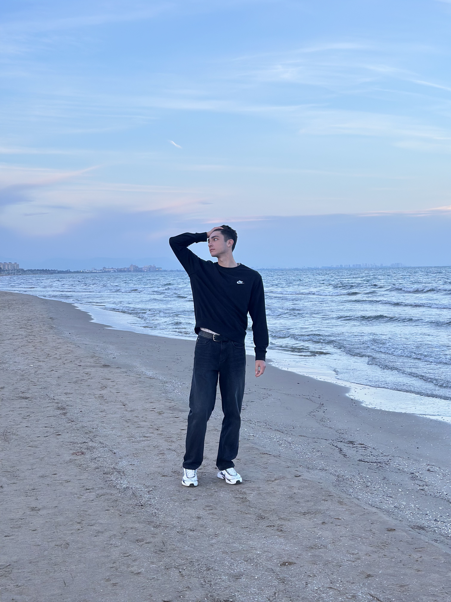
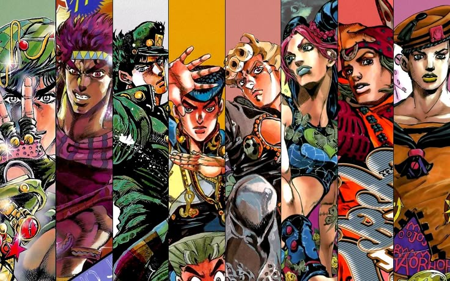
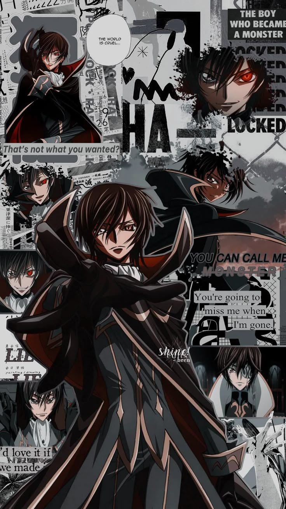
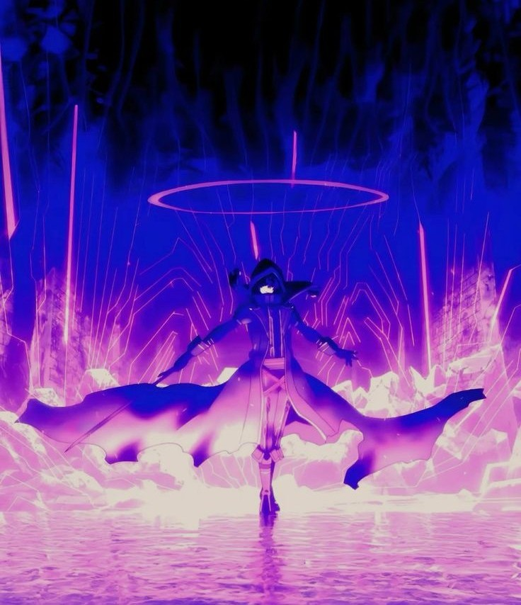
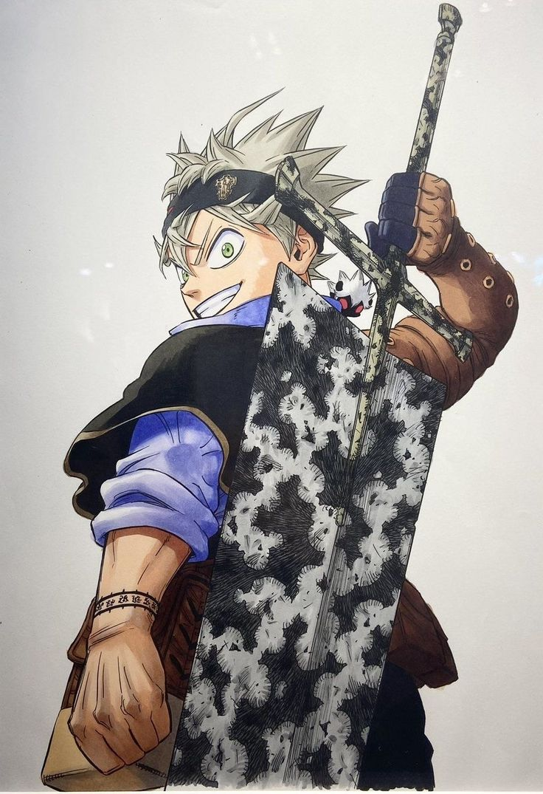
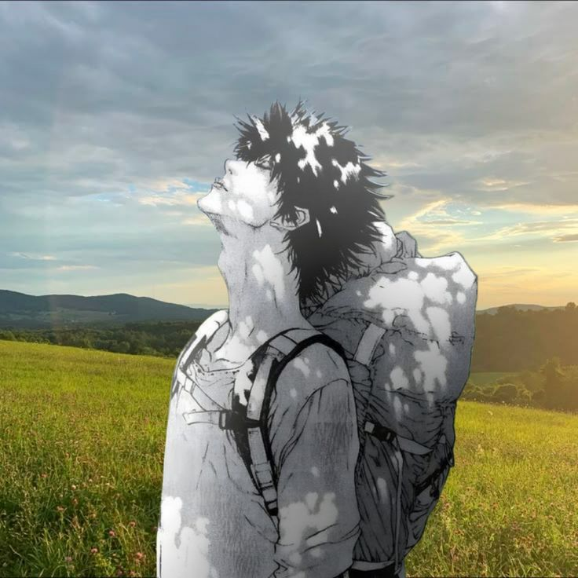
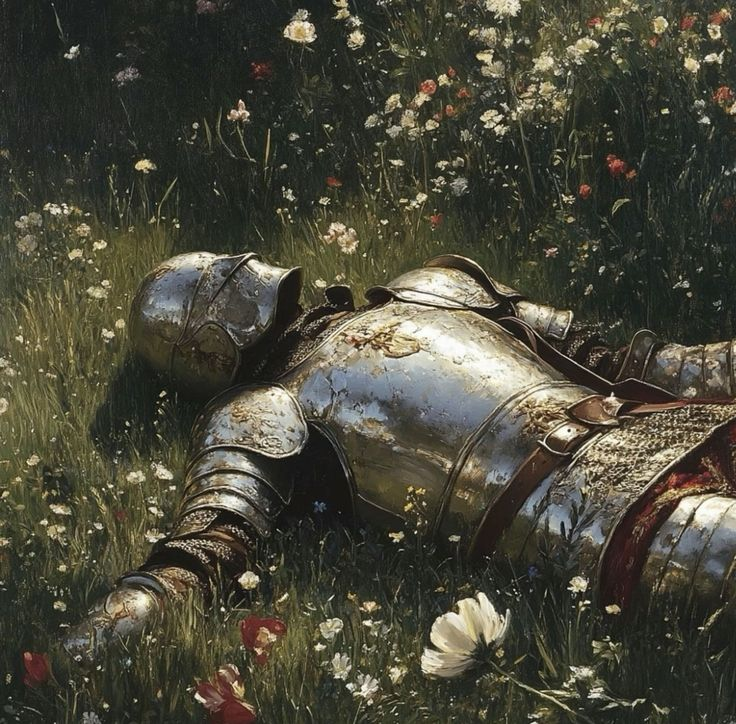

Предмети попереднього семестру
| № | Дисципліна | Е/З | Нац. | Бал | ECTS |
|---|---|---|---|---|---|
| 1 |
Математична логіка, теорія алгоритмів та структури даних Татарінова О.А. [КМПС] |
Е Р |
4 | 75 | C |
| 2 |
Нарисна геометрія в задачах візуалізації Федченко Г.В. [ГМКГ] |
Е Р |
4 | 83 | B |
| 3 |
Організація баз даних Мартиненко Г.Ю. [ММІО] |
Е КР |
5 | 100 | A |
| 4 |
Програмування GUI Дашкевич А.О. [ГМКГ] |
Е Р |
3 | 73 | D |
| 5 |
Технології програмування Шаповалова М.І. [ММІО] |
Е КР |
5 | 90 | A |
| 6 |
Іноземна мова Картун Н.О. [МКІМ] |
З - |
4 | 86 | B |
| 7 |
ОК СВУ Клименко О.І. [БПНС] |
З - |
4 | 85 | B |
| 8 |
Правознавство Кузьменко О.В. [П] |
З РЕ |
4 | 80 | C |
ANIME
Улюблені аніме
Я люблю аніме не тільки за сюжет, а й за атмосферу, стиль, персонажів та емоції, які залишаються після перегляду.

JoJo's Bizarre Adventure
Стильне, незвичайне та дуже харизматичне аніме з яскравими персонажами.

Code Geass
Сильна історія про стратегію, владу, боротьбу та складний вибір.

The Eminence in Shadow
Аніме з темною атмосферою, гумором, силою головного героя та ефектними сценами.

Black Clover
Історія про наполегливість, дружбу, магію та бажання стати сильнішим.
Attack on Titan
Масштабне, драматичне та напружене аніме з глибоким сюжетом і сильною атмосферою.
MOOD
Мої настрої

Щасливий
Сумний

Зараз
QUOTE
Моя улюблена цитата
“У футболі шлях від героя до нікчеми займає лише тиждень.” — Давід Вагнер
CITY
Моє місто
Я живу в місті Харків. Харків відомий як перша столиця України. Це велике місто з багатою історією, розвиненою освітою, культурою та особливою атмосферою.